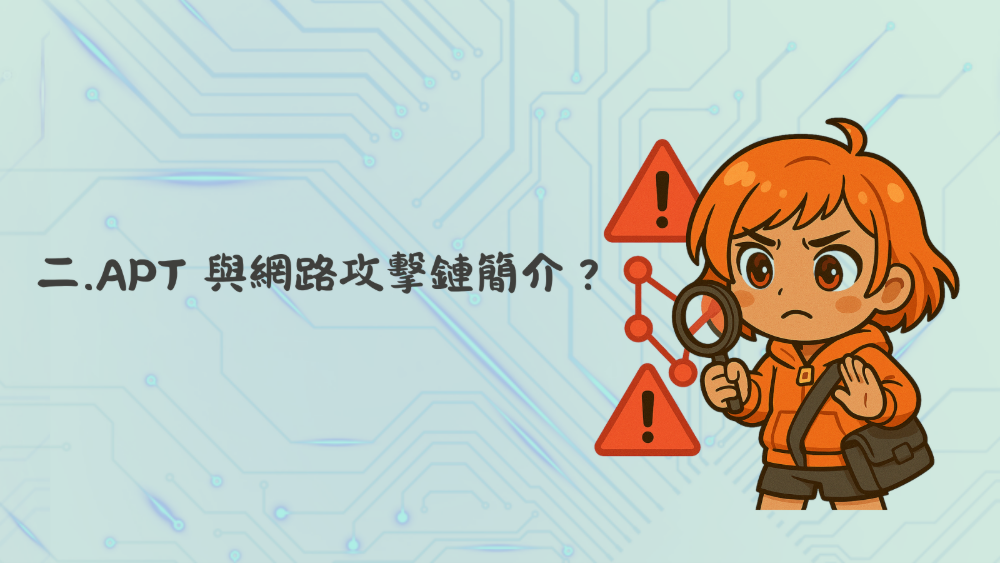
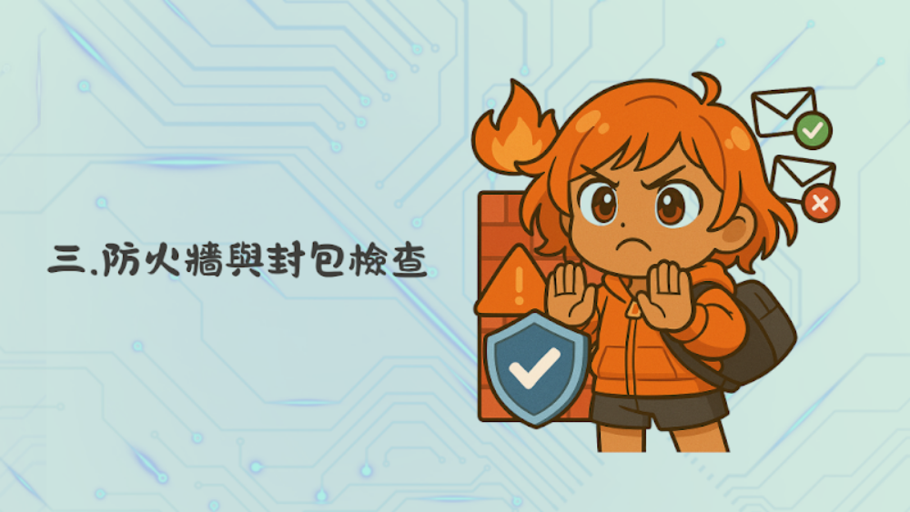
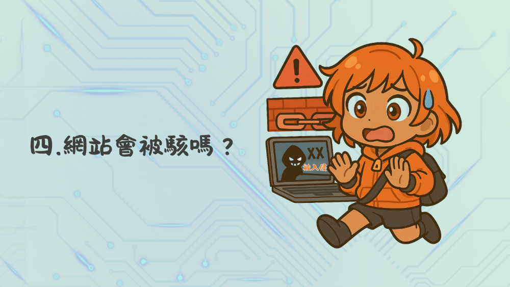
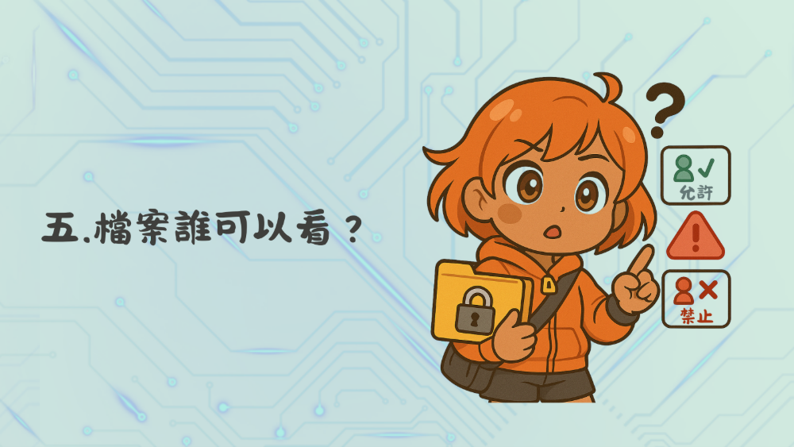
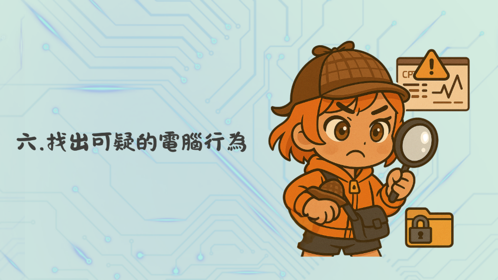
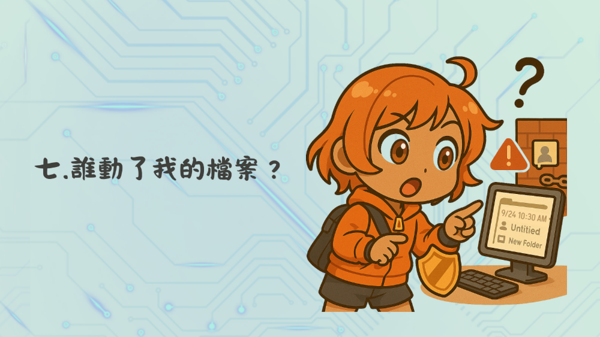
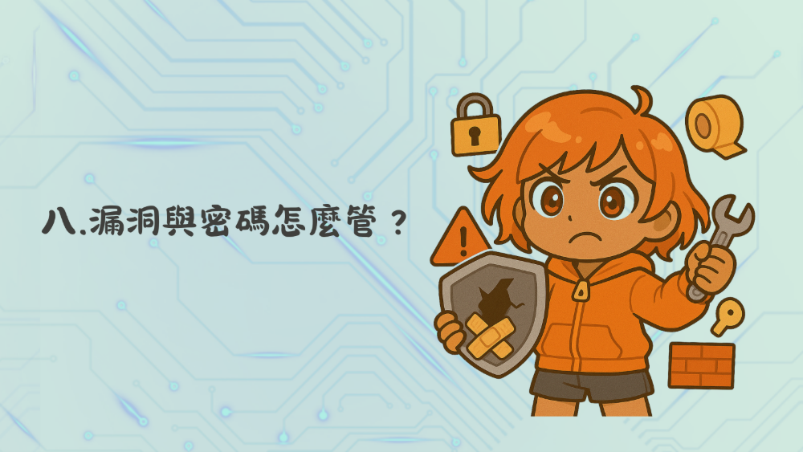
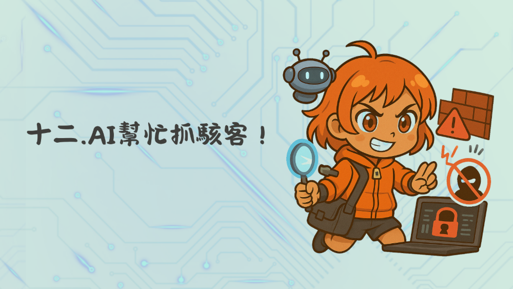

✕
返回
簡報區(13章)
影片區(13章)
教學簡報
第一章 系統安全是什麼？
download
電腦就像你家的門，需要:
1.鎖門（密碼）
2.定期的清掃（更新）
第二章 APT攻擊與網路攻擊鏈

download
像電影裡的駭客任務一樣步步潛入
第三章 防火牆與封包檢查

download
學校守衛決定誰能進校門
第四章 網站會被駭嗎？

download
密碼太簡單就像用透明膠帶封門
第五章 檔案誰可以看？

download
DAC / MAC 像家長與自己設定電腦權限
第六章 找出可疑的電腦行為

download
`netstat` 指令像X光幫你看腦袋裡誰在想什麼
第七章 誰動了我的檔案？

download
稽核日誌就像電腦的監視器回放
第八章 漏洞與密碼怎麼管？

download
BUG就像門沒關好，容易被偷東西
第九章 通行密碼攻擊
download
Hash就像只有對的人能用的門禁卡，不能被複製
第十章 檔案怎麼保護？
download
`chmod` 像是設定誰能看誰能改你的日記
第十一章 機器學習入門
download
ML像是一個「會自己學習」的機器老師
第十二章 AI 幫忙抓駭客

download
AI像資安界的「超級保全機器人」
第十三章 IDS & IPS 差在哪？
download
IDS像警察錄影，IPS像現場抓人
✕
載入中...
YouTube 教學影片
第一章 系統安全是什麼？
第二章 APT攻擊與網路攻擊鏈
第三章 防火牆與封包檢查
第四章 網站會被駭嗎？
第五章 檔案誰可以看？
第六章 找出可疑的電腦行為
第七章 誰動了我的檔案？
第八章 漏洞與密碼怎麼管？
第九章 密碼怎麼傳？駭客怎麼偷
第十章 檔案怎麼保護？
第十一章 機器學習入門
第十二章 AI 幫忙抓駭客
第十三章 IDS & IPS 差在哪？